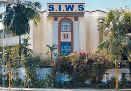

Nursery & KG
S.I.W.S. Pre-School
Wadala
The earliest steps — play-led learning that builds curiosity, language and social confidence before formal schooling begins.

Sewree Wadala Estate & Matunga, Mumbai · Est. 1934
Knowledge is the greatest of all wealth. From Nursery to Class X, S.I.W.S. School has been shaping curious, capable students across Wadala and Matunga for over nine decades.
About the School
The South Indians' Welfare Society was founded in 1934 to bring quality education to Mumbai's South Indian community, beginning with a single primary school at Shivaji Park, Dadar. That single classroom has grown into a network of pre-primary, primary and secondary schools across Wadala and Matunga, still guided by the same conviction: that knowledge, once earned, cannot be taken away.
Today the school balances academic rigour under the SSC Board with the values, discipline and community spirit the Society was built on — small enough that teachers know every child's name, established enough to have taught generations of the same families.
Our Institutions
Nursery & KG
Wadala
The earliest steps — play-led learning that builds curiosity, language and social confidence before formal schooling begins.
KG – Class X
Wadala
A strong foundation in language, mathematics and science, taught by educators who follow each child year on year.
KG – Class X
Matunga
The Society's second primary campus, serving the Matunga community with the same curriculum and care.
KG – Class X · SSC Board
Wadala
Preparing students for the SSC board examinations with a full academic, sporting and cultural calendar.
Academics
Admissions for the 2026–27 academic year are open. Age-wise eligibility, required documents and the application form are available from the school office or the admissions link in the footer.
Facilities
School Life
Beyond textbooks, students take part in an annual calendar of sports days, elocution and art competitions, and cultural celebrations that mark the school year — the same events generations of SIWS alumni remember long after they've left.
Achievements, toppers and event highlights are shared with parents through the school notice board and community updates.
Contact